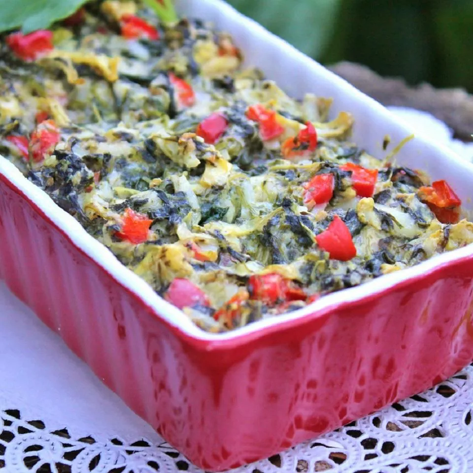

Holiday Hot Spinach Dip
j

Descriptoin
A yummy hot vegitable dip! Serve with your favourite crackers.
Ingredients
- 1 (10 ounce) package frozen chopped spinach, thawed and drained
- ½ cup red bell peper, diced
- 1 tablespoon minced garlic
- 1 (6.5 ounce) jar artichoke hearts, drained and mashed
- ½ cup sour cream
- ½ cup grated Parmasen cheese
- salt and ground black pepper to taste
- ¼ cup heavy cream
Steps
- Preheat the oven to 350 degrees F (175 degrees C).
- Mix together spinach, bell pepper, garlic, artichokes, sour cream, an dparmasen cheese. Season with salt and pepper. Mixture will be thick; add cream to thin to dip consistency. Spoon into a 1-quart baking dish.
- Bake for 20 minutes, or untill bubbly. Serve with crackers.